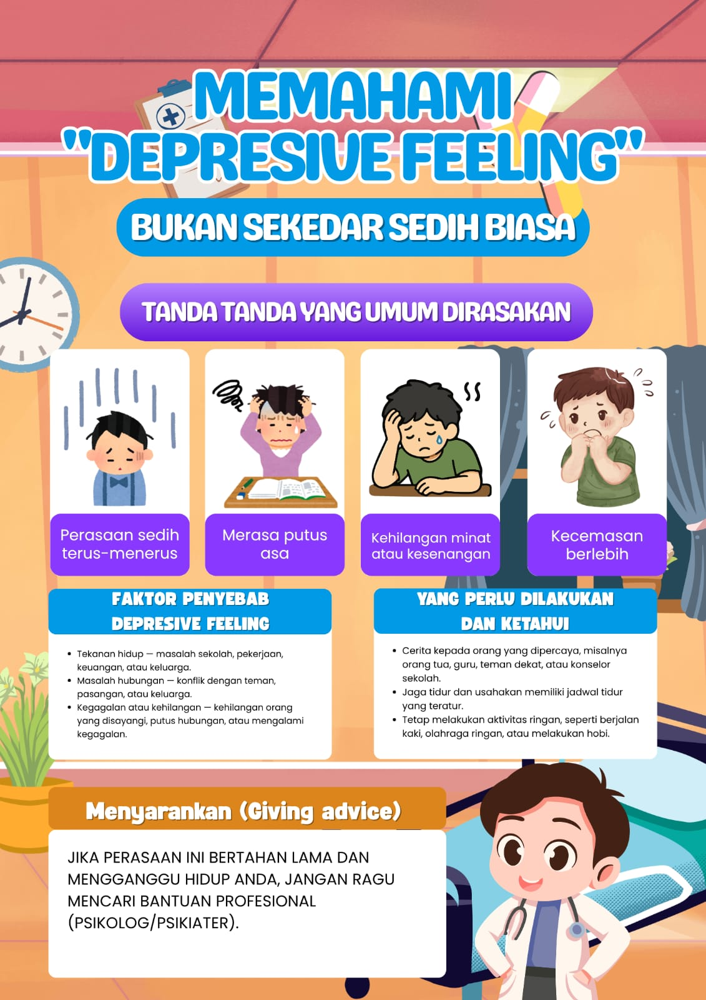

Kenali apa yang sedang kamu rasakan dan temukan langkah kecil yang mungkin dapat membantu.

Pilih kondisi yang paling mendekati apa yang sedang kamu rasakan saat ini. Tidak ada jawaban yang salah.
Pilihanmu
Pilih tingkat yang paling mendekati keadaanmu.
Pilih tingkat perasaanmu untuk mendapatkan saran.
Kamu tidak harus menyelesaikan semuanya sekaligus.
Beberapa kondisi kehidupan dapat memengaruhi suasana hati dan kondisi emosional seseorang.
Masalah sekolah, pekerjaan, keuangan, atau tekanan dari lingkungan dapat membuat seseorang merasa terbebani.
Konflik dengan teman, pasangan, keluarga, atau lingkungan sosial dapat menjadi sumber tekanan.
Kehilangan orang yang disayangi, perubahan besar, atau mengalami kegagalan dapat memengaruhi perasaan.
Jika perasaan ini bertahan lama dan mulai mengganggu kehidupan sehari-hari, jangan ragu untuk mencari bantuan.
Kamu dapat berbicara dengan orang tua, guru, guru BK, teman yang dipercaya, konselor, psikolog, psikiater, atau tenaga kesehatan.